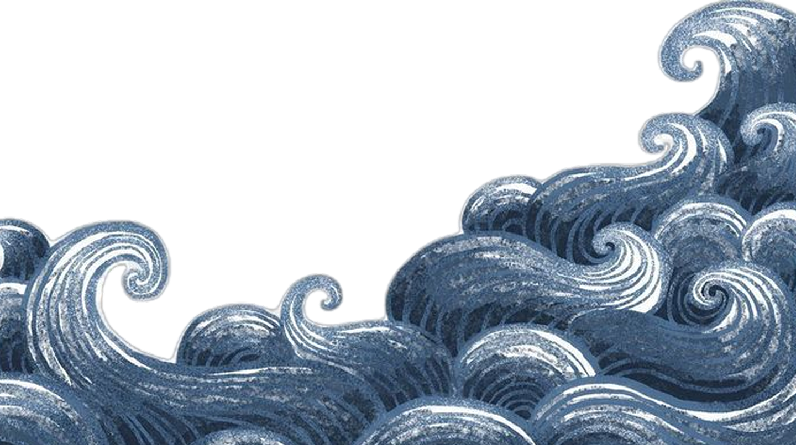

Meet The Artist
I AM, KUNLE ITUNU
A visual artist specializing in realism and abstract art. My work is driven by passion, creativity, and a genuine commitment to bringing ideas to life through art.
Over the years, I have had the opportunity to work with international clients, creating commissioned pieces and shipping paintings across borders, as well as collaborating with local businesses on murals and branding projects. I take pride not only in the quality of my work but also in building meaningful relationships with clients through clear communication, professionalism, and punctuality.
My artistic approach blends a timeless vintage influence with minimalist aesthetics, allowing each piece to make a statement while maintaining its own character. Ultimately, I believe art should be more than something we see; it should be something we connect with.
